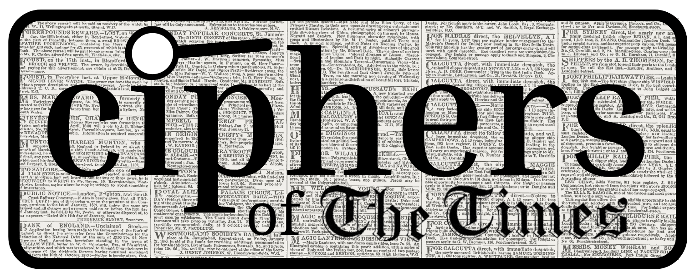

An exploration of Victorian era newspapers, novels, and their intersections 
Ciphers of The Times is a SSHRC-funded research project based in the McGill University Library dedicated to exploring the Victorian-era newspaper phenomenon known as the Agony Column. Characterized by anonymity, lack of censorship and encryption, the “agonies” were a widely popular form of print media in nineteenth-century England. Often communicated with an air of mystery and sometimes coded, the column featured the voices of desperate parents, forlorn lovers, cunning criminals and savvy detectives. Newspaper readers reveled in their dramas. Our exhibition seeks to recount the stories of Agony Column to better understand their influence on Victorian society and literature as well as their impact in the present.
Use the navigation bar to access different elements of the project. More information about the Agony Column and The Times, including a timeline of their development and key personalities, can be found within the FAQ. Try your hand at playing the Victorian detective in an interactive Twine game, which doubles to showcase common methods of encryption in agony ads and ways they were decoded. Data from our computational analysis of the syntactic and thematic features shared by the Agony Column and Victorian “newspaper novels” is visualized here. Test your own writing against an analysis of Victorian speech patterns by using the Victorian Vibecheck tool. Datasets compiled throughout the project, in addition to the full text of novels and newspapers used in our computational analysis, are available for viewing and download in the resources tab as well as on our GitHub page. More information about the project, including its various contributors and acknowledgments, is provided in the about section.